Animales de Honduras
¡Conoce un poco los animales que hay en honduras!
Mamíferos:"Danto" o Tapir (Tapirus bairdii), jabalí o Pecarí (Tayassu pecari), Jagüilla (Sus americanensis),Tigre o jaguar (Felis onca), puma (Felis concolor), Tigrillo (Felis pardalis), gato montés o Caucel (Felis Wiedii), Yaguarundi o puma pequeño (Felis yaguaroundi), murciélago (Vampirus spectrum), pizote solo (Nasua narica),
mapachín (Procyon lotor), Oso hormiguero (Myrmecophaga tridactyla), etc.
Ejemplos:
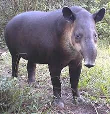
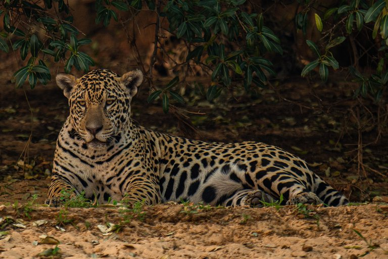
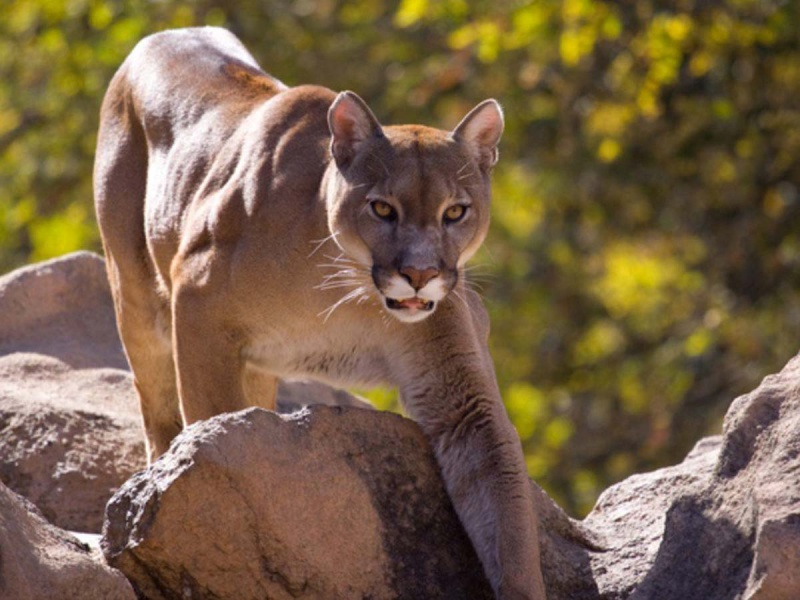
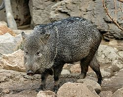
Aves:
Colibríes o gorriones en más de 20 especies diferentes; Una de ellas es el colibrí esmeralda, una especie de colibríes endémica de Honduras la viudita (Trogon rufus), el pájaro carpintero (Phleoceastes guatemalensis), la lechuza (Pulsatrix perspicillata),
el tecolote (Ciccaba virgata), el Tucán o pico de navaja (Rhanfastus sulfuratus y Pteroglosus torcuatus), lora nuca amarilla (Amazona ochrocephala), perico verde de la costa (Aratinga finschi), rey zopilote o cóndor centroamericano (Sarcoramphus papa),
Eumops glaucinus, Guara Roja
Ejemplos:
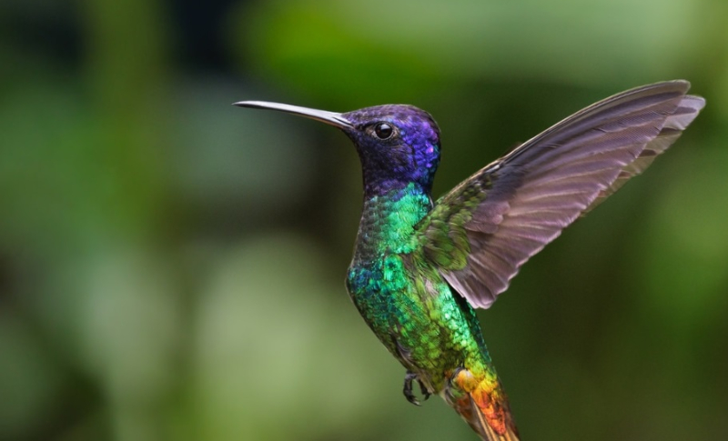
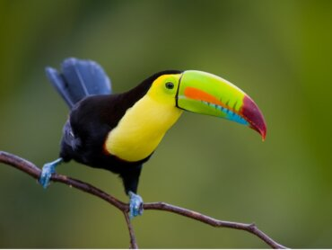
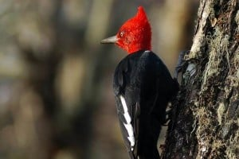
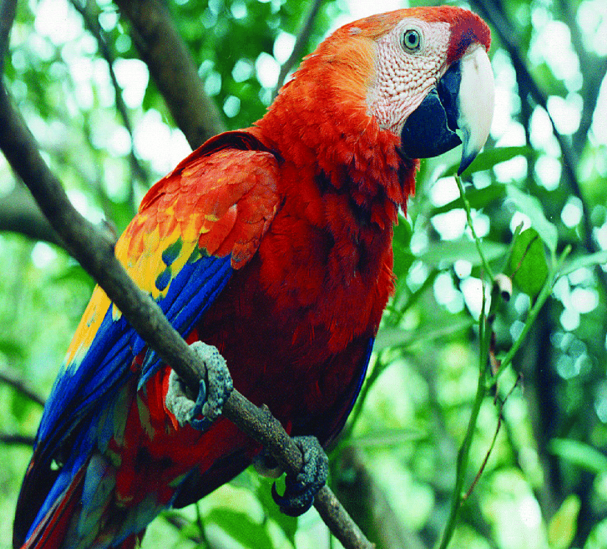
Reptiles:
Barba amarilla (Botrox atrox), tamagás (Botrox nasuta), Porthidium nasutum, boa (Constrictor imperatur), cascabel (Crotalus durissus), tortuga verde (Chelonia mydas), caimán café (Caiman cocodrylus fuscus), lagarto ( Cocodrylus acutus), serpiente de coral, Acanthopleura granulata, Basiliscus vittatus. Otros reptiles son las iguanas que se mimetizan con los tonos variados del bosque; las tortugas de agua dulce como la caguama (Caretta caretta).
Ejemplos:
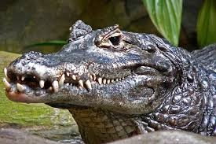
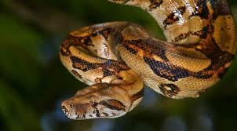
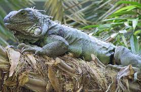
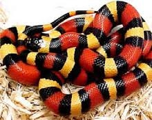